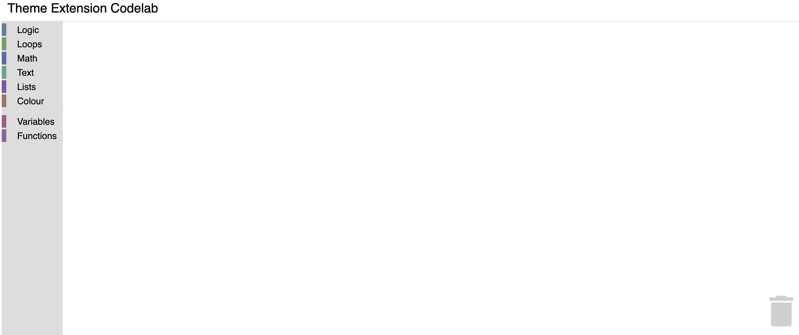

What you'll learn
In this codelab you will learn how to:
- Add a theme to the workspace
- Add a colory theme to a category
- Add a color theme to a block
What you'll build
A very simple Blockly workspace with customized themes
What you'll need
- A browser
- Basic knowledge of HTML, CSS, and JavaScript.
This codelab is focused on Blockly's theme extension. Non-relevant concepts are glossed over and provided for you to simple copy and paste.
Download the sample code
You can get the sample code for this code by either downloading the zip here:
or by cloning this git repo:
git clone https://github.com/google/blockly-samples.git
If you downloaded the source as a zip, unpacking it should give you a root folder named blockly-samples-master.
The relevant files are in examples/theme-extension-codelab. There are two versions of the app:
starter-code/: The starter code that you'll build upon in this codelab.complete-code/: The code after completing the codelab, in case you get lost or want to compare to your version.
Each folder contains:
index.js- The codelab's logic. To start, it just injects a simple workspace.index.html- A web page containing a simple blockly workspace.
To run the code, simple open starter-code/index.html in a browser. You should see a Blockly workspace with a flyout.

In this section you will create a very basic Blockly.Themes.Halloween, then inject it to display in the workspace.
Themes
Themes are a way to customize the look and feel of Blockly. Currently, we support customizing block colours, category colours and certain components through the Themes class
A theme can be created using the constructor or by using defineTheme. Using defineTheme makes it easy to extend a pre existing theme and set all values with a single object.
Add the below code in index.js right before function start()
Blockly.Theme.Halloween = Blockly.Theme.defineTheme('halloween', {
'base': Blockly.Themes.Classic,
});
And then add a line to inject this theme in function start() in index.js
function start() {
// Create main workspace.
workspace = Blockly.inject('blocklyDiv',
{
toolbox: toolboxCategories,
theme: Blockly.Themes.Halloween,
});
}
Note: At this point, we have just created a new theme. But it does not have any customizations. We will do that next.
Within the Halloween theme definition, you can override colours of multiple components:
Blockly.Themes.Halloween = Blockly.Theme.defineTheme('halloween', {
'base': Blockly.Themes.Classic,
'componentStyles': {
'workspaceBackgroundColour': '#ff7518',
'toolboxBackgroundColour': '#F9C10E',
'toolboxForegroundColour': '#fff',
'flyoutBackgroundColour': '#252526',
'flyoutForegroundColour': '#ccc',
'flyoutOpacity': 1,
'scrollbarColour': '#ff0000',
'insertionMarkerColour': '#fff',
'insertionMarkerOpacity': 0.3,
'scrollbarOpacity': 0.4,
'cursorColour': '#d0d0d0',
'blackBackground': '#333'
}
});
Test it
Reload your web page. You should see a themed workspace!

A category style currently only holds a colour property. It is the colour of the category on the flyout. This value can either be defined as a hex value or as a hue. Usually these colours should be the same as the colourPrimary on the majority of blocks in the category making it easy for users to tell what blocks belong in what category.
Update the Theme definition to have the category styles as below.
Blockly.Themes.Halloween = Blockly.Theme.defineTheme('halloween', {
'base': Blockly.Themes.Classic,
'categoryStyles': {
'list_category': {
'colour': "#4a148c"
},
'logic_category': {
'colour': "#8b4513",
}
},
'blockStyles': {
'list_blocks': {
'colourPrimary': "#4a148c",
'colourSecondary':"#AD7BE9",
'colourTertiary':"#CDB6E9"
},
'logic_blocks': {
'colourPrimary': "#8b4513",
'colourSecondary':"#ff0000",
'colourTertiary':"#C5EAFF"
},
'loop_blocks': {
'colourPrimary': "#85E21F",
'colourSecondary':"#ff0000",
'colourTertiary':"#C5EAFF"
},
'text_blocks': {
'colourPrimary': "#FE9B13",
'colourSecondary':"#ff0000",
'colourTertiary':"#C5EAFF"
}
},
'componentStyles': {
'workspaceBackgroundColour': '#ff7518',
'toolboxBackgroundColour': '#F9C10E',
'toolboxForegroundColour': '#fff',
'flyoutBackgroundColour': '#252526',
'flyoutForegroundColour': '#ccc',
'flyoutOpacity': 1,
'scrollbarColour': '#ff0000',
'insertionMarkerColour': '#fff',
'insertionMarkerOpacity': 0.3,
'scrollbarOpacity': 0.4,
'cursorColour': '#d0d0d0',
'blackBackground': '#333'
}
});
Test it
Click on different blocks in the component and you should see the colours that you applied show up.

In this codelab you have learned how to extend and customize themes for the blocks component.
Additional information
- Themes documentation
- You can also customize the font styles. Details are available in the documentation.